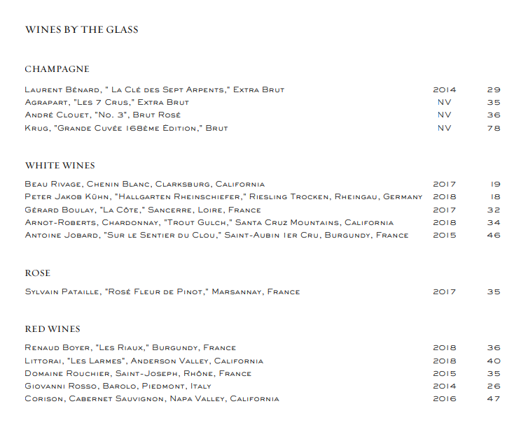

Affamato is proud to present a curated collection of fine wines from around the world. The list highlights selections of older vintages from classic, Old World growing regions as well as wines from smaller local producers with limited production that best exemplify Californian viticulture. And because the menu changes daily, our sommeliers have the opportunity to explore the full range of the award-winning list, choosing wines that are uniquely paired to the cuisine.
In addition to our vast collection of wines, we offer a selection of fine whiskey, single malt scotch, vintage amaro, and other spirits and liqueurs.
If you would like to bring in a bottle, our corkage fee is 85 dollars per 750ml bottle. We do ask that you limit to two bottles that are not currently represented on our wine list.
